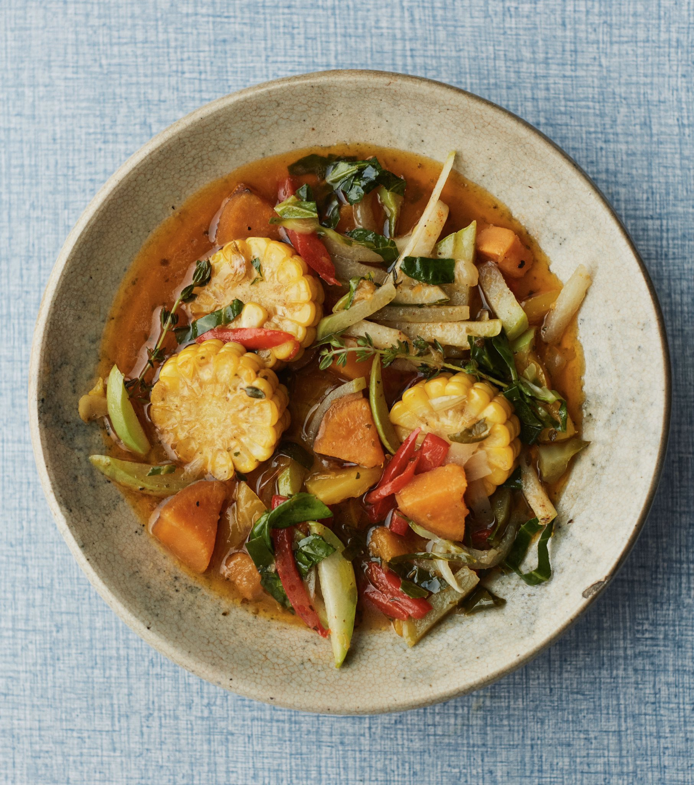

Ital Rundown

Ital, a plant-based way of eating that originated with the Rastafari faith in the 1930s.
More than just a vegan diet, ital (rhymes with “vital”) is about eating nourishing,
health-promoting food, eschewing added sugar, oil, and salt.
Rundown has to be all about the veg than the sauce, which should be plentiful with ingredients.
ingredients
- 1/2 Onions
- 1/2 Onions
- 4 garlic chopped
- 1 tsp black pepper
- thumb of grated ginger
- 1 tsp pimento
- 1/2 scotch bonnet chopped
- 150g pumpkin or butternut squash cubed
- 150g sweet potato
- 1/2 cho cho sliced
- 1/2 green bell pepper sliced
- 1/2 red bell pepper sliced
- 100ml vegetable stock
- 400ml coconut milk
- fresh thyme
- corn on cob chopped
Method
- Get a large & deep pan, add vegetable oil. Once hot dash in the onions and garlic, cook down until soft on medium heat.
- Add black pepper, pimento and grated ginger, scotch bonnet and fresh thyme and stir. Throw in sweet potato, pumpkin or butternut squash, cho cho, bell peppers, vegetable stocks and coconut milk and corn and stir.
- Simmer for 15-20 minutes until veggies and soft.
Home